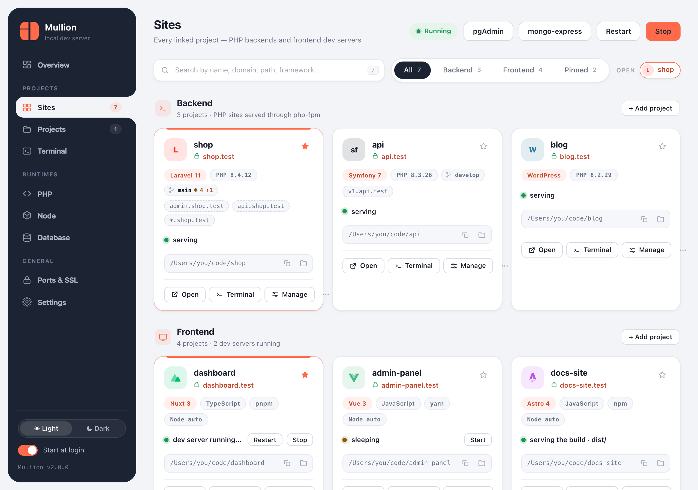

Sites & domains
Link any folder and it gets a domain. HTTPS, subdomain aliases, wildcard DNS and the Sites page are all covered here.
Linking a project
$ cd ~/code/shop
$ mullion link # name = folder name → shop.test
$ mullion link store # or pick a name → store.test
$ mullion link --secure # HTTPS right away
$ mullion link --php # force PHP serving for a folder with a package.jsonMullion detects the project type:
- PHP projects are served by that version's FastCGI worker. Mullion finds Laravel's
public/folder on its own. - Frontend projects (a
package.jsonwith adevscript) get a managed dev server behind the domain. See Frontend dev servers.
Use mullion links (or sites) to list sites, mullion unlink to remove one, and mullion rename [old] <new> to change a domain. Dev servers follow a rename.
The Sites page
Every linked project appears as a card. Each card shows:
- the framework and its major version, the language, and the package manager
- the PHP or Node version
- the Git branch, with a count of changes and of commits ahead
- every domain the site answers on
- its status: serving, dev server running, sleeping, or serving the build

- Search by name, domain, path or framework. Press / to focus the search box.
- Filter by All, Backend, Frontend or Pinned. Pin a card with the star to keep it at the top.
- Each card has Open, Terminal and Manage buttons, plus Copy path and Show in Finder/Explorer. The ⋯ menu has more actions.
- Click a project's name to open its project page. Open projects appear as tabs, so you can keep several side by side, and each can pop out into its own window.
Mullion detects these frameworks:
- PHP: Laravel, Symfony, Drupal, CodeIgniter, Yii, CakePHP, Slim and WordPress, plus plain Composer projects.
- JavaScript: Nuxt, Next.js, SvelteKit, Astro, Gatsby, Angular, Qwik, NestJS, Remix, Solid, Svelte, Vue, React, Express and Vite.
HTTPS
Caddy's local certificate authority signs a certificate for every https:// site. Setup trusts that authority once, so browsers show a real padlock.
$ mullion secure [name] # HTTPS for one site
$ mullion unsecure [name] # back to plain HTTP
$ mullion ssl all on # every site at onceFor certificate trust and export, see Ports & SSL.
Subdomain aliases
A site can answer on extra subdomains, all served by the same project:
$ mullion alias shop add api # api.shop.test
$ mullion alias shop add v1.api # v1.api.shop.test
$ mullion alias shop add '*' # every subdomain: tenant1.shop.test, …
$ mullion alias shop list
$ mullion alias shop remove api- PHP apps see the real
Hostheader, so Laravel subdomain routing works. Frontend dev servers get it inX-Forwarded-Host. - Named aliases resolve through the hosts file.
- The
*wildcard needs Mullion's local DNS: turn it on once withmullion dns on. - You can also manage aliases in the project page's Domains tab.
Wildcard DNS
The hosts file can't express wildcards, so tenant1.shop.test only resolves through Mullion's own small DNS server, which runs inside the background agent.
$ mullion dns on # install the OS hookup (asks for administrator rights once)
$ mullion dns status # what is in place
$ mullion dns off- macOS:
/etc/resolver/<tld>sends*.<tld>lookups to127.0.0.1, port 53535. - Windows: an NRPT rule sends
.<tld>lookups to127.0.0.1on port 53. That port must be free; Internet Connection Sharing or a local DNS proxy can hold it.
Changing the TLD
Every site uses .test by default. To change it for all sites at once:
$ mullion tld local # shop.test → shop.localAvoid real public TLDs such as .dev or .app. Browsers force them to HTTPS (HSTS preload), which breaks plain-HTTP local sites.
Frontend dev servers
For a frontend site, Mullion runs the project's dev server with npm, pnpm or yarn, picked from the lockfile. It installs dependencies on the first run, uses the right Node version, detects the port the server actually opened, and proxies the domain to it, with HMR and websockets working.
- Wake on demand. Opening a stopped site's link shows a short Starting… page, then your app. If the server can't start, the page shows the real error and the end of its log.
- Idle sleep. A site with no open tab sleeps after 2 minutes. A site with an idle open tab sleeps after 10 minutes; requests and code edits reset that clock.
- Manual control:
mullion dev start|stop|restart [name], or the buttons on the card. A site you stop stays stopped until you open its link or start it again. - Dev or build.
mullion serve build [name]serves the last production build (dist/,build/orout/) as static files with an SPA fallback, and stops the dev server. If there's no build yet, Mullion runs one. Switch back withmullion serve dev. - Side by side.
mullion link --buildserves the build as a separate site,<name>-build.test, so you can compare it with the dev version.